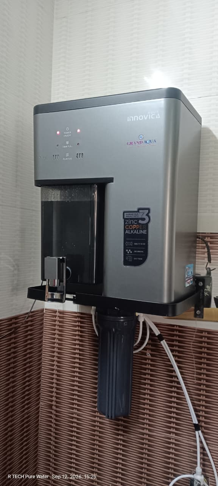
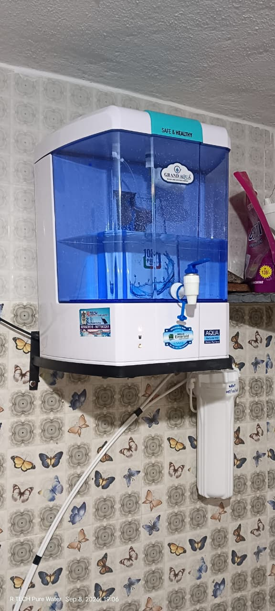
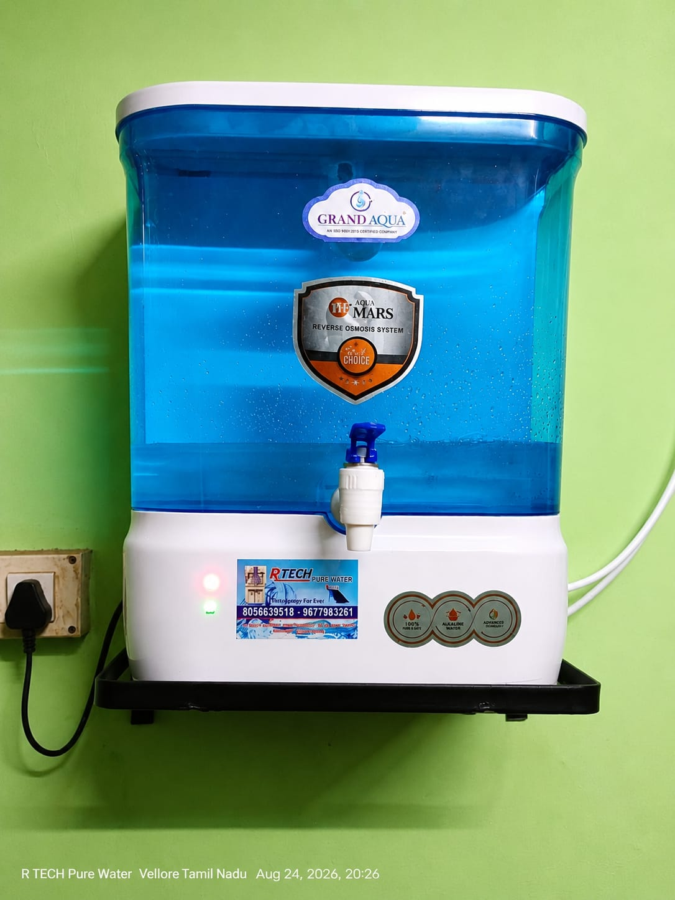
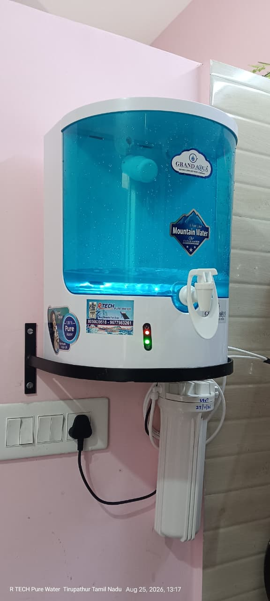
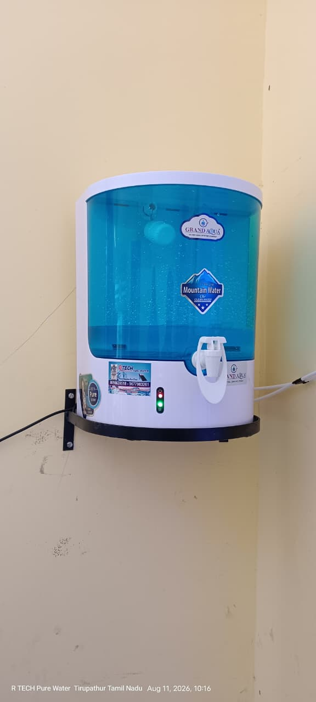
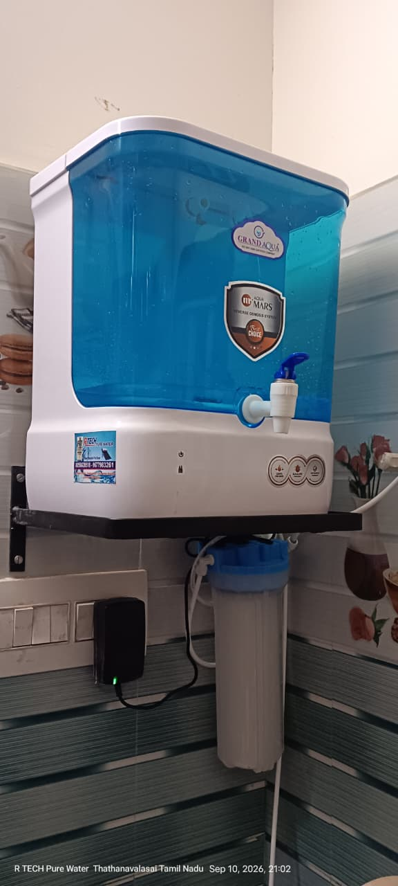

Meet the owner behind R TECH PURE WATER
Owner Name: THAVASEELAN
Business: R TECH PURE WATER
Location: Tirupathur, Tamil Nadu
Address: Bus Stop, Chinnakadai, Tiruvannamalai Road, Tirupathur, Tamil Nadu - 635602
We provide reliable RO water purification, installation, repair, filter replacement and maintenance services.






📍 Bus Stop, Chinnakadai,
Tiruvannamalai Road,
Tirupathur, Tamil Nadu - 635602
💧 RO Installation & Service | 🔧 RO Repair | 🔄 Filter Replacement | 🛠️ Annual Maintenance